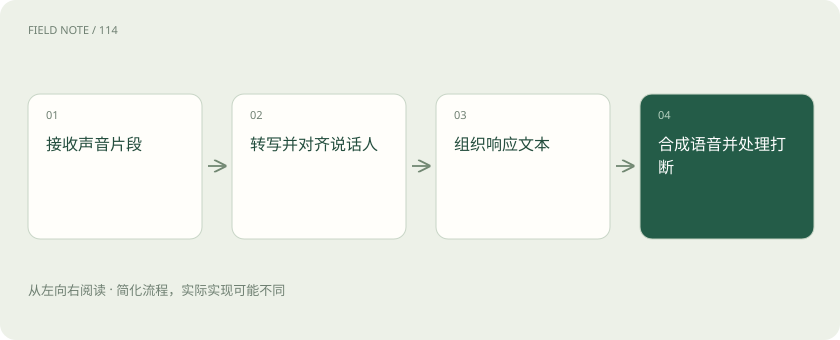

先读哪些知识
先用一个类比理解
像电话传译链，听写和朗读是两项独立工作，中间还要保证意思没变。
类比只帮助建立直觉，不等同于技术的完整机制。
一图看懂

概念边界
ASR 把语音转成文字，TTS 把文字合成为声音。说话人分离用于判断谁在说，时间对齐用于定位语句出现位置，都是与转写相关但不同的任务。多人口音与背景噪声会增加识别困难。
内部怎样运作
实时语音系统要在等待完整语义与快速回应之间取舍，断句和打断会影响体验。TTS 的语气自然不代表内容正确，转写遗漏否定词还可能改变业务含义，应保留可回听的证据片段。
把机制放进具体场景
工人说“不要复位”，若ASR漏掉“不”，后续回答可能完全反向。应特别检查安全否定词，必要时回听片段。另一端的TTS即使语气自然，也只是朗读文本，不能替前面的错误转写负责。
取舍与容易忽略的限制
实时语音要处理用户尚未说完和主动打断的情况。过早作答容易截断条件，等太久又会影响自然交流；结束检测和响应取消因此属于系统体验的一部分。不同说话人的转写若被混合，内容即使逐字准确也可能归错责任。保存必要的时间对齐信息，有助于把争议结论追溯到实际语音片段。
放在一起对比
| 方式或概念 | 主要作用 | 关键边界 |
|---|---|---|
| ASR | 声音转文字 | 否定词遗漏风险 |
| TTS | 文字转声音 | 自然不等于正确 |
| 说话人分离 | 区分谁在说 | 不等同转写 |
放进真实场景
SCENARIO
会议里一人提出方案，另一人表示反对。若只输出合并后的文字而丢失说话人标签，总结器可能把反对意见写成全体共识。
别踩这个误区
词错误率只能说明部分识别质量，不能完整表达任务成功、说话人归属或响应体验。
想一想
声音很自然是否说明语音助手理解正确？
不说明，自然度属于合成表现，转写、语义和任务结果需要分别检查。
关联阅读
资料与边界
本文为原创知识讲解。类比和图示经过简化；示例数字不代表实测或报价。整理日期：2026-11-04。文末列出对应技术的原始资料，具体功能与版本支持请以原文为准。